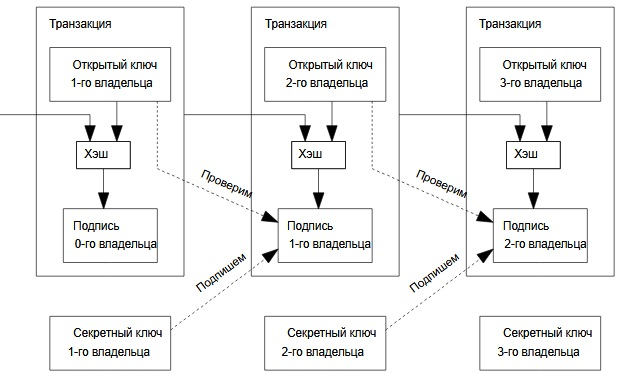

2. Транзакции
Определим электронную монету как последовательность цифровых подписей.
Очередной владелец отправляет монету следующему, подписывая хэш
предыдущей транзакции и публичный ключ будущего владельца и
присоединяя эту информацию к монете. Получатель может проверить
каждую подпись, чтобы подтвердить корректность всей цепочки владельцев.

Проблема, разумеется, в том, что получатель не может определить, сколько раз
бывший владелец потратил эту монету. Традиционное решение заключается
в проверке центральным доверенным лицом («монетным двором» или эмитентом)
каждой транзакции. После любого платежа монета возвращается к эмитенту, который
выпускает новую ее версию; и только напрямую полученным таким образом
монетам можно доверять. Недостаток этого подхода в том, что от компании-
эмитента зависит судьба всей денежной системы, так как она подобно банку
контролирует каждую проходящую через нее транзакцию.
Адресат должен знать,
что никто из предыдущих владельцев не подписал транзакцию, предшествующую по
времени той, что находится в цепочке отправленной ему монеты. Для наших целей
лишь первая транзакция из нескольких является истинной, поэтому мы не должны
беспокоиться о поздних попытках двойной траты. В централизованной
модели эмитент знал обо всех транзакциях и решал, в каком порядке они идут. Чтобы
избавить схему от посредника, участникам необходимо открыто публиковать
транзакции, а также уметь приходить к согласию относительно единого порядка их
следования. Получателю нужно доказательство того, что для каждой транзакции из цепочки
большинство пользователей согласны считать ее первой.